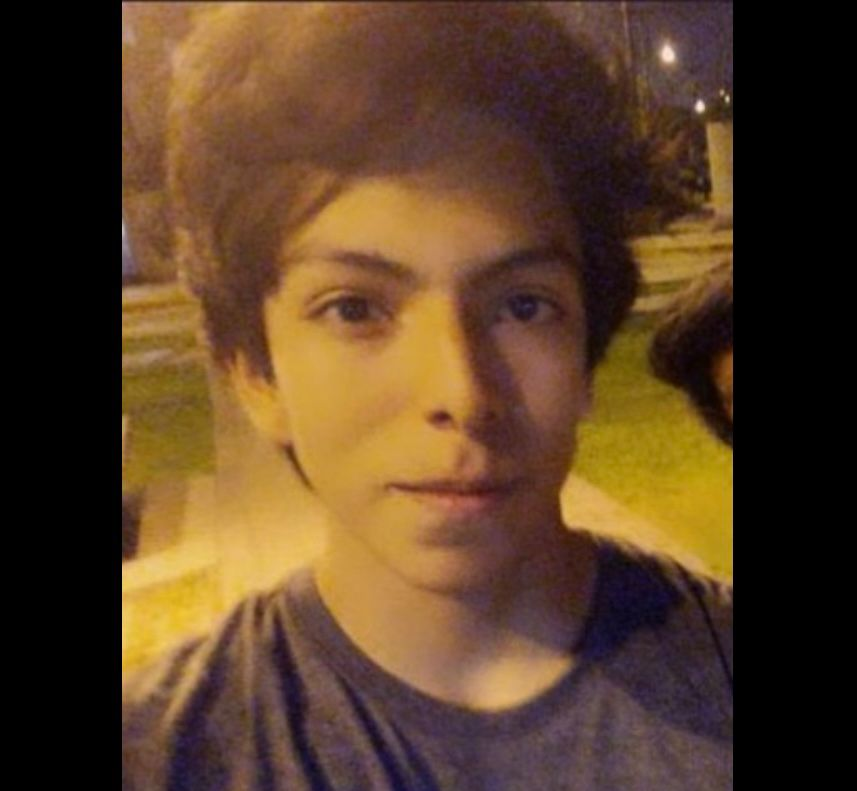

|  |
Presentación
Holaa, Soy estudiante de Marketing Estratégico e Innovación, actualmente cursando el séptimo ciclo. Disfruto realizar ejercicios y mantenerme activo.
Me gusta despejar la mente caminando o escuchando música.
|
 |
Dinámica 1
En nuestra primera dinámica, nos reunimos en grupo y colaboramos para idear un personaje que pudiéramos dibujar y posteriormente imprimir en la impresora 3D.
El resultado final fue un oso de aspecto amigable y tamaño reducido.
|
 |
Dinámica 2
Este proyecto fue entretenido, con mis compañenos nos pusimos de acuerdo rápido y coincidimos en el tema que ibas a realizar, el nombre no fue tan dificil de escoger ya que iba ligado al proyecto que realizamos.
|
 |
Dinámica 3
Para esta dinámica, deseo proponer un proyecto orientado a ayudar a los animales callejeros, como perros y gatos, que a menudo carecen de alimentos y deben pasar varios días sin comer.
Creo que se trata de un proyecto sencillo de implementar, pero que puede brindar una mejor calidad de vida a estos animales.
|